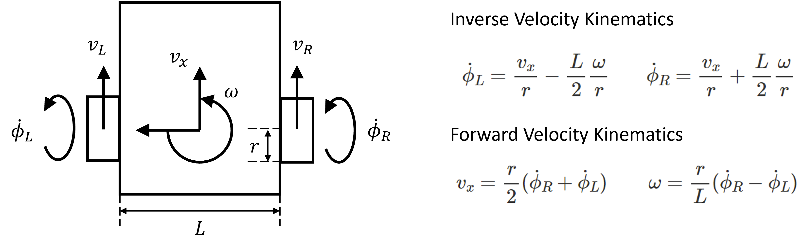

Differential Drive Robot
This differential drive robot project used Turtlebot3 for SLAM, Navigation, Auto Docking and
other functions. The robot was developed in ROS2 and tested in both simulation and real world.
A differential drive robot usually has two motors with encoders, a motor controller with ROS
driver, two separately driven wheels placed on each side of the robot body and one or more
caster wheels to balance the robot, a battery, a camera, a lidar, an IMU, a microncontroller and
a computer. By changing speed and direction of two independent motors/wheels, a differential
drive robot can move forward and backward with or without turning, and rotate in place. This
project involved software development using Python and C++ in Ubuntu Linux and hardware
devleopment for controllers, sensors and actuators. The concepts and methods used in
this project can also be applied to other differential drive robots.
Description of Project
In this project, I accomplished the following tasks:
Understood differential drive kinematics. (Reference: Motion Model for the
Differential Drive Robot)

Designed a differential drive robot in SolidWorks and Fusion 360.
Simulated TurtleBot3 in Gazebo. Built SDF and URDF models for different differential drive
robots and SDF models for Gazebo worlds. Used Gazebo plugins for IMU, lidar, camera,
differential drive controller, joint state publisher, etc.
Setup a real TurtleBot3 Burger with PC, SBC (Raspberry Pi), and OpenCR control module. Connected
PC to Raspberry Pi with its IP address through SSH to bringup TurtleBot3 in ROS2.
Configured two BLDC motors with a motor controller for a differential drive robot. Tuned PID
parameters for closed loop speed control. Developed a motor driver and a differential drive
controller using controller manager and hardware interface in ROS2. Setup a lidar and a
realsense camera in ROS2. The motor controller, lidar and camera are connected to PC through
USB.
Test the accuracy of wheel odometry. Implemented sensor fusion of wheel odometry and IMU using
robot localization ekf in ROS2.
Calibrated the camera and used ArUco markers and OpenCV library to estimate camera pose.
Developed the automatic docking code and behavior trees, and tested on Turtlebot3 and a
differential drive robot in both simulation and real world.
Tuned different SLAM (Cartographer and SLAM Toolbox) and Navigation2 parameters in ROS2, and
tested teleoperation, SLAM, and autonomous navigation of differential drive robots in different
Gazebo world and real world.
Used Rviz2 and rqt tools to visualize and inspect ROS2 topics, services, actions and nodes.
Wrote many ROS2 publishers and subscribers, services and clients, action servers and clients,
tf2 broadcasters and listeners in Python and C++.
Made 3D animations in Blender to demonstrate robot features and applications.
Conclusion
In this project, a TurtleBot3 and a differential drive robot were simulated for SLAM, Navigation,
Auto Docking and other tasks in Gazebo at first. After tuning parameters and optimizing code, the
TurtleBot3 and the differential drive robot were configured, tested and further improved in real
world. The procedures for implementing SLAM, Navigation, Auto Docking and other tasks on
differential drive robots in simulation and in real world are very similar since they are both done
in ROS2. However, more sensors, actuators, controllers and hardware need to be setup in real world.
Moreover, there are more uncertainties and noises in real world. In general, differential drive
robots are easy to make and control, but they are not good for obtacles and bumpers.